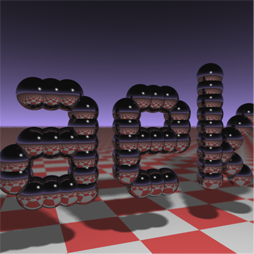

We received quite a few emails from readers asking, "Well, if that's so easy to do, can't you provide us with a real example?" That was not the plan (since the idea is to write the renderer step-by-step) but we wrote a minimalistic ray-tracer which is about 300 hundred lines in about a couple of hours. Although we are not necessarily proud of that performance, we just wanted to show that when one knows these techniques well, implementing them is not difficult. The source code is available for download. We did not and will not spend time commenting this program. It was written fairly quickly so sure there is room for improvement. In this version of the raytracer we made the light visible (it's a sphere) so its reflection would appear in the reflective balls. When glass spheres are totally transparent (white) it is some times hard too see them, so in our example, we tinted them slightly (red). In the real world clear glass is not necessarily visible. It depends on the environment (have you ever walked into a door made out of glass?). Note that the resulting image is not completely accurate. The shadow under the transparent red sphere should not be completely opaque. We will learn in future lessons how we can easily correct this visual inaccuracy. We also implemented other features such as a fake fresnel (using the facing ratio) and refraction. All these things will be studied later so do not worry if you don't understand them clearly at the moment. At least, you now have a small program to play with.
To compile the program download the source code to your hard drive. You will need a c++ compiler (we use gcc under Linux). This program doesn't need anything particular to get compiled. Take a Linux shell and type the following command where you file lives:
To create an image, run the program by typing ./raytracer in a shell. Wait a few seconds. When the program returns, you should have a file called untitled.ppm on your disk. You can open this file with Photoshop, Preview (on Mac) or Gimp (on Linux). Alternatively, check the lesson devoted to reading and displaying PPM images.
Here is one possible implementation of the classical recursive ray-tracing algorithm in pseudo-code:
A Minimal Ray Tracer
Many years ago, researcher Paul Heckbert wrote a ray tracer that could "fit on a bussiness card". The idea was to write a minimal ray tracer in C/C++, so small that he could print it out at the back of his business card (more information on this idea can be found in an article he wrote in Graphics Gems IV). Many programmers since then, have tried themselves to this coding exercise. Below, you can find a version written by Andrew Kensler. The image on the left, is the result of his program. Note the depth of field effect (objects get blurred in the distance). It is quite amazing to be able to create a fairly complex image with such few lines of code.
#include <stdlib.h> // card > aek.ppm
#include <stdio.h>
#include <math.h>
typedef int i;typedef float f;struct v{f x,y,z;v operator+(v r){return v(x+r.x,y+r.y,z+r.z);}v operator*(f r){return v(x*r,y*r,z*r);}f operator%(v r){return x*r.x+y*r.y+z*r.z;}v(){}v operator^(v r){return v(y*r.z-z*r.y,z*r.x-x*r.z,x*r.y-y*r.x);}v(f a,f b,f c){x=a;y=b;z=c;}v operator!(){return*this*(1/sqrt(*this%*this));}};i G[]={247570,280596,280600,249748,18578,18577,231184,16,16};f R(){return(f)rand()/RAND_MAX;}i T(v o,v d,f&t,v&n){t=1e9;i m=0;f p=-o.z/d.z;if(.01<p)t=p,n=v(0,0,1),m=1;for(i k=19;k--;)for(i j=9;j--;)if(G[j]&1<<k){v p=o+v(-k,0,-j-4);f b=p%d,c=p%p-1,q=b*b-c;if(q>0){f s=-b-sqrt(q);if(s<t&&s>.01)t=s,n=!(p+d*t),m=2;}}return m;}v S(v o,v d){f t;v n;i m=T(o,d,t,n);if(!m)return v(.7,.6,1)*pow(1-d.z,4);v h=o+d*t,l=!(v(9+R(),9+R(),16)+h*-1),r=d+n*(n%d*-2);f b=l%n;if(b<0||T(h,l,t,n))b=0;f p=pow(l%r*(b>0),99);if(m&1){h=h*.2;return((i)(ceil(h.x)+ceil(h.y))&1?v(3,1,1):v(3,3,3))*(b*.2+.1);}return v(p,p,p)+S(h,r)*.5;}i main(){printf("P6 512 512 255 ");v g=!v(-6,-16,0),a=!(v(0,0,1)^g)*.002,b=!(g^a)*.002,c=(a+b)*-256+g;for(i y=512;y--;)for(i x=512;x--;){v p(13,13,13);for(i r=64;r--;){v t=a*(R()-.5)*99+b*(R()-.5)*99;p=S(v(17,16,8)+t,!(t*-1+(a*(R()+x)+b*(y+R())+c)*16))*3.5+p;}printf("%c%c%c",(i)p.x,(i)p.y,(i)p.z);}}
To run the program, copy/paste the code in a text file (rename the file for instance minray.cpp or anything you like), then compile the code (c++ -O3 -o min ray minray.cpp or clang++ -O3 -o min ray minray.cpp if you prefer the clang compiler) and run it with the command line: min ray > minray.ppm. Rather than writing the final image data to disk which would make the code longer, the data is just written out to the standard output (the shell from which you are running the program) which we can redirect (with the sign >) to a file. The PPM file can be read with Photoshop.